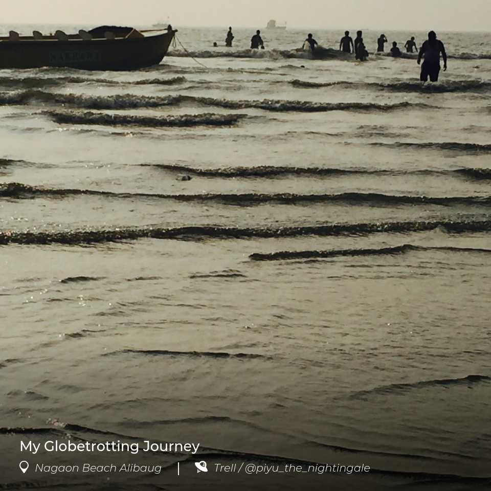
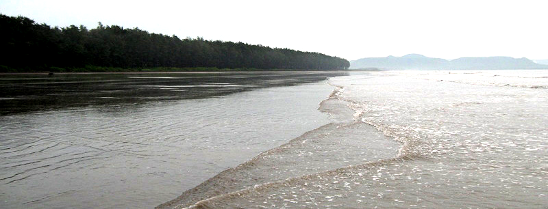
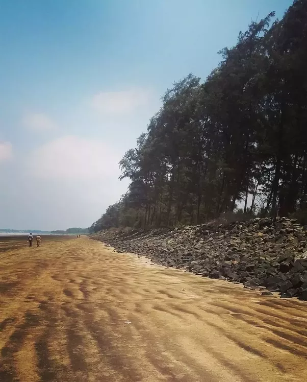

| Home | Sign Up | Alibag | Beaches | Contact Us |
|---|
Nagaon Beach:



Nagaon is a beach town on the shores of the Arabian Sea, in the North Konkan region of Maharashtra, India. It is located 9 km from Alibag and 114 km from Mumbai. Nagaon beach is popular mainly because of its cleanliness, water sport activities. The beach is around 3 km long. There are a few small hotels in Nagaon as the rest of the area is privately owned. Best option to stay here to stay in cottages owned by local people. Nagaon village has higher literacy rate compared to Maharashtra. In 2011, literacy rate of Nagaon village was 92.89 % compared to 82.34 % of Maharashtra. In Nagaon Male literacy stands at 95.98 % while female literacy rate was 89.81%.
| Feedback |
| ©Alibag |